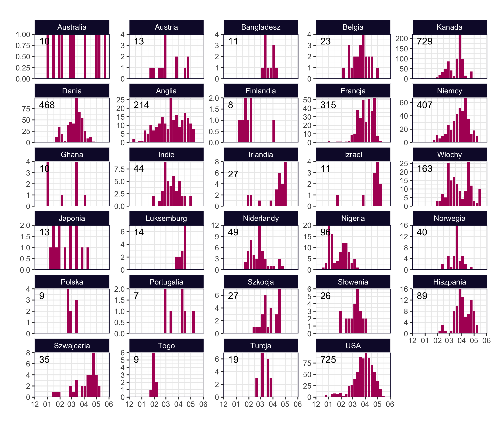
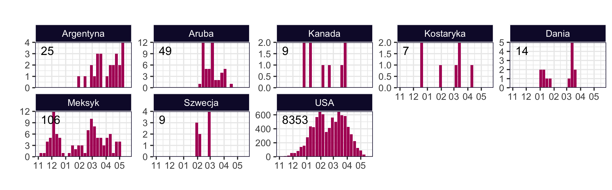
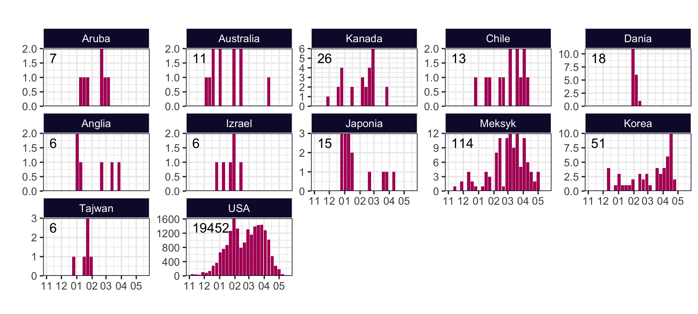
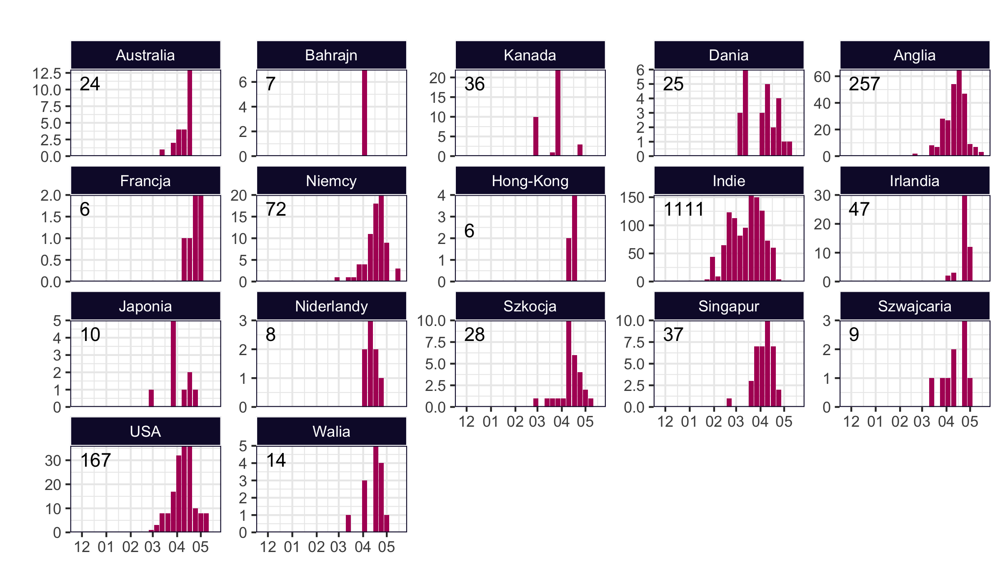
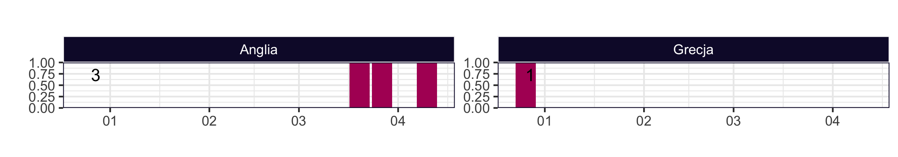

Variant of Interest (VoI)
According to WHO nomenclature, this designation is used for variants for which genomic, epidemiological or in vitro evidence is available that could suggest a significant impact on transmissibility, disease severity or resistance that would have a real impact on the epidemiological situation in the EU/EEA. However, this evidence is still preliminary or involves high uncertainty.
The following VoIs are currently defined for SARS-COV-2:
Epsilon (B.1.427/B.1.429, Californian). Main mutations: L452R, D614G.
Eta (B.1.525, Nigerian). Main mutations: E484K, D614G, Q677H.
Zeta (P.2). Main mutations: E484K, N501Y, D614G.
Kappa (B.1.617.1/ B.1.617.3, Indian). Main mutations: L452R, E484Q, D614G.
Data based on GISaid. Not all of these variants are present in Europe in significant numbers.
Occurrences of Eta variant (B.1.525, Nigerian) Occurrences of Epsilon variant (B.1.427, Californian)
 Occurrences of Epsilon variant (B.1.429, Californian)
 Occurrences of Kappa variant (B.1.617.1)

Occurrences of Kappa variant (B.1.617.3)

Occurrences of Zeta variant (P.2)